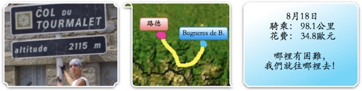
今天是超棒的一天，從早上起床的那一刻起，就很完美。
糾纏了一整天的宿醉總算消散一空，整個人彷彿重生一樣∼
經過昨天的大雷雨，窗外的天氣不免令人擔心，打開窗戶一看，
是個雲稍微多一點，但仍可以看見陽光的陰涼天，希望等會陽光可以多一點，烏雲不要來。
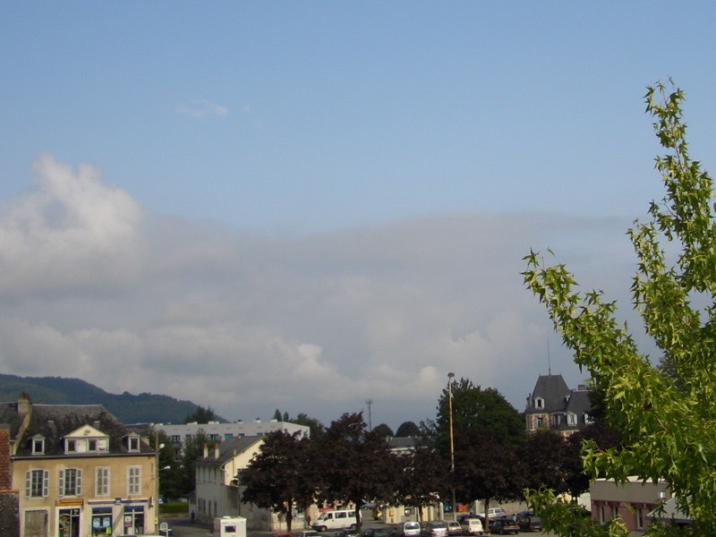
昨天很冷很冷的跑出去上網，後來實在太冷躲回房間準備睡覺。
這才發現，其實把iBook拿靠近窗戶再出去一點點，也是有訊號可以用的，
這樣的旅館是相當彌足珍貴的呀∼
趁著天氣好，準備入山吧，先去超市採買食物。
發現了之前買了一條可以吃兩天的布列塔尼奶油蛋糕，再吃它一次，2.6歐元。
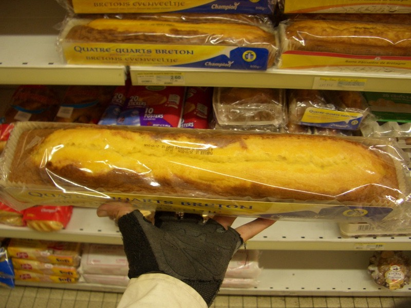
今天會消耗很多熱量，買點零嘴隨時補充，腰果，1.45歐元。綜合水果乾，0.78歐元。
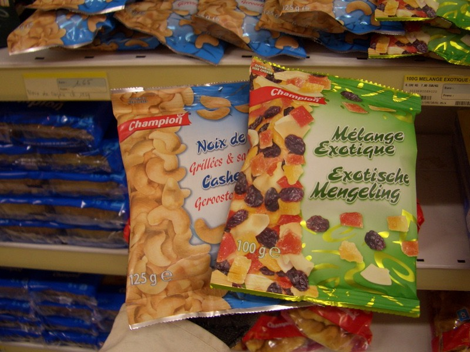
採購完畢就出發吧！先走D935，還沒上山之前，經過一個市集，有在賣傳統的大乳酪唷∼
可惜買了也帶不動，這起碼能讓我吃上一整年吧。
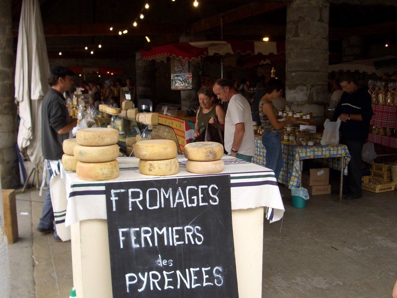
還有很酷的火腿香腸鋪，跟老闆說能不能讓我拍張照，不但OK而且還請我試吃燻香腸。
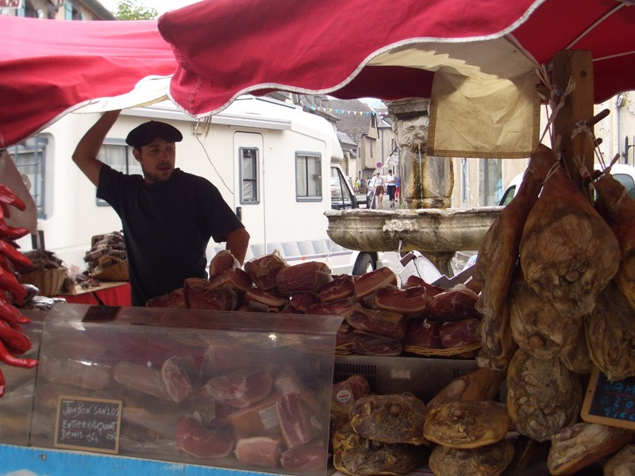
雖然好吃，可是對我來說還是稍微太生了一點，吃生的東西的口感很難詭異，努力嚥下肚去。
是不是這麼紅∼？但搞不清楚是辣的還是甜的。
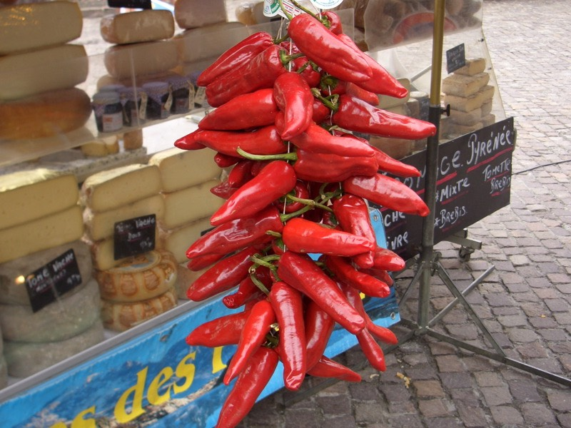
鎮裡面到處都是這種真人大小的布偶娃娃，猛一看還分不太出來。
而且每個人都有自己的動作，有的就放在桌椅上，桌上還擺杯咖啡，有的放在櫥窗前，好像在選購東西。
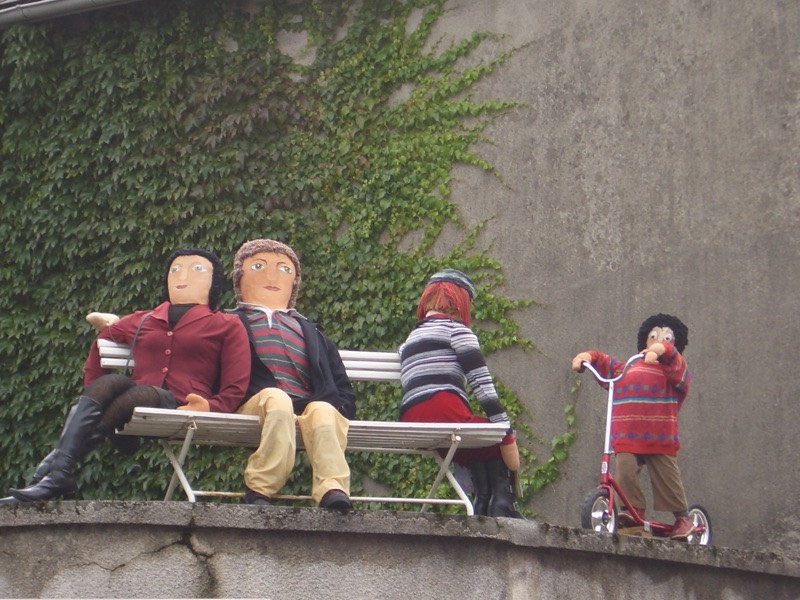
騎著騎著看到D918時，心中不禁升起了一股敬意。
今天我來挑戰你了，才騎沒多久，就被綿延不斷的上坡給折騰的兩腳鬆軟。
路邊停車休息一下，看看太陽逐漸露出臉來，覺得好像有點不協調的地方。
這......？真相只有一個，翻開地圖看，是的，我爬錯邊了 /_\
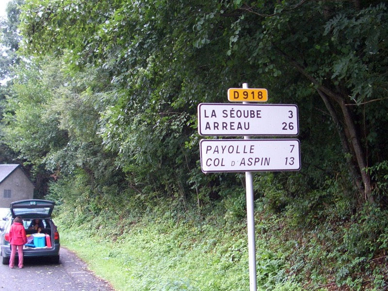
不知該笑還是該哭。爬了半小時，結果爬錯邊，唉.....一路順著自己爬來的地方再滑回去。
又回到剛剛的鎮上，昏倒 @@" D918在鎮裡分岔成兩條，沒仔細看就爬錯邊了，好！重來一次！
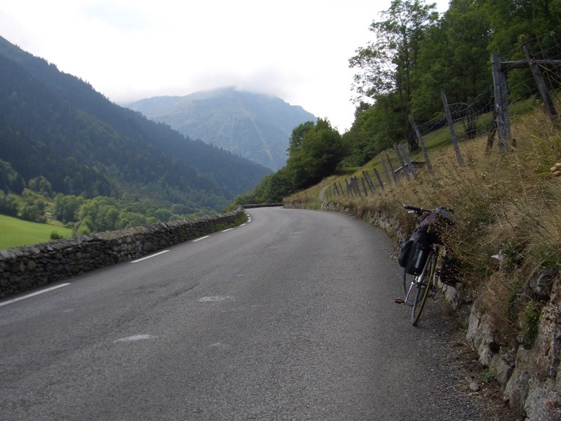
這才是今天要爬的目標，庇里牛斯山（HAUTES-PYRENESS）的其中一個山峰叫『Col du Tourmalet』
牌子的解讀方式猜測如下：本鋒標高2114公尺，目前海拔920公尺（大概是從800公尺左右開始爬），
離鋒頂距離還有15公里，最下方那個2%就猜不出來，沿路都一直改變數字，坡度的陡峭度嗎？
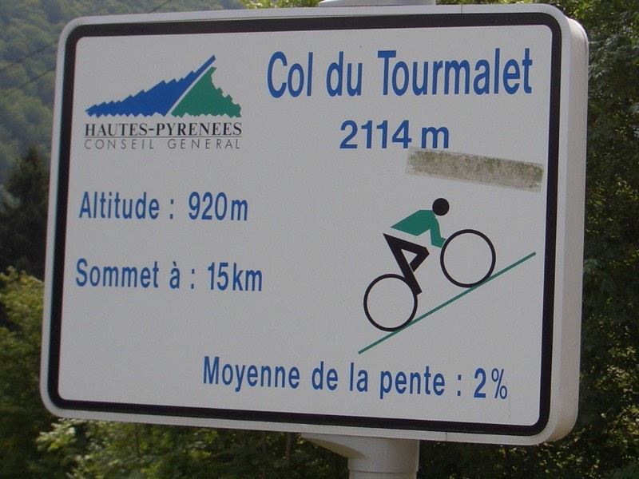
沿路偶而有看到小心牛隻的警告標示，不在意的以為又是擺好看的，從沒看過有牛笨到跑到路上來。
結果就真的有一隻趴在路邊悠哉的吃著草，不知是誰家的牛離家出走了？
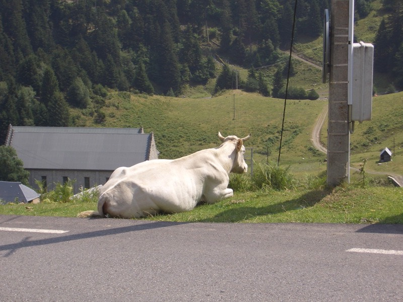
後來發現是我少見多怪，整條路上都是牛群、羊群（這個特多）在散步，多到車子都必須停下來讓牠們走。
看到好多牛在路上閒晃，覺得好開心∼真是奇特的景象，但等到牠們往我的方向走過來的時候，就再也笑不出來了。
每隻牛頭上都長的尖尖的角，要是突然發起牛脾氣，往我這裡衝撞過來的話，那可不是鬧著玩的。
但是又沒地方可以跑，除非掉頭下山。就因為路上有牛所以不敢騎，真不怕被人笑死？
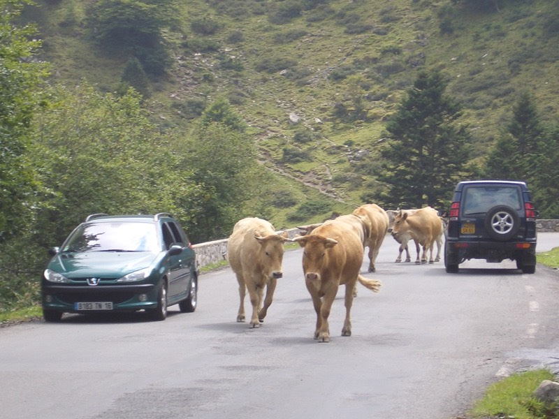
檢視一下身上有沒有會讓牛興奮的東西，很好，沒有紅色的，青天白日滿地紅放在包包裡沒別出來，不然就成了鬥牛了。
屏著呼吸，看著牛一步一步的逼近，最後從我身旁不到一公尺的地方穿過，真的很恐怖！
沿路有很多人都是騎腳踏車上山，大家都是輕裝旅行，感覺已經爬很多次了，只是一般的運動罷了∼
前面這個阿伯，如他衣服上面的數字，真的有67歲以上了，精力充沛，佩服佩服。
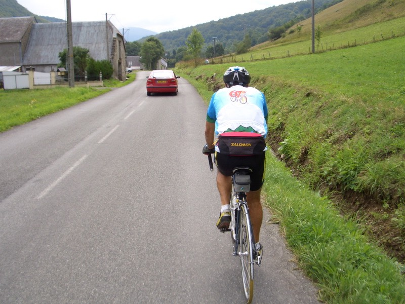
D918的路牌，除了標示距離之外，也貼心的加上了海拔高度（ALT），一千公尺突破！好開心∼還有一千公尺要爬。
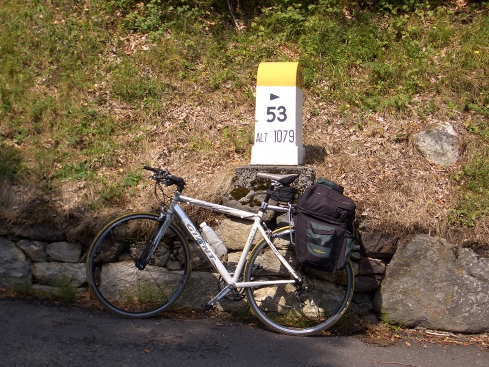
偶爾會出現美麗的小瀑布∼看起來冰涼的山泉水，之後就裝了一瓶來喝。
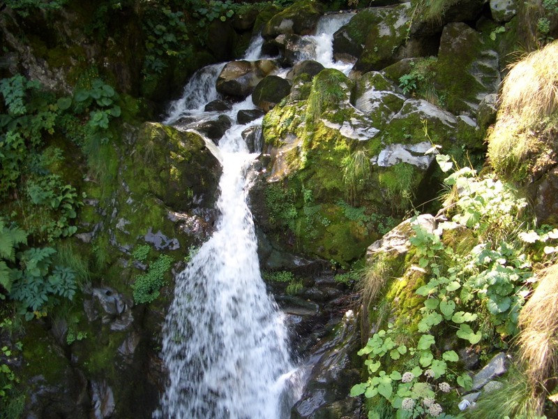
一千三百公尺達成
這大約是海拔1500公尺往下拍的照片，底下那小小條的路，是剛剛爬上來的地方，看了就腳軟= ="
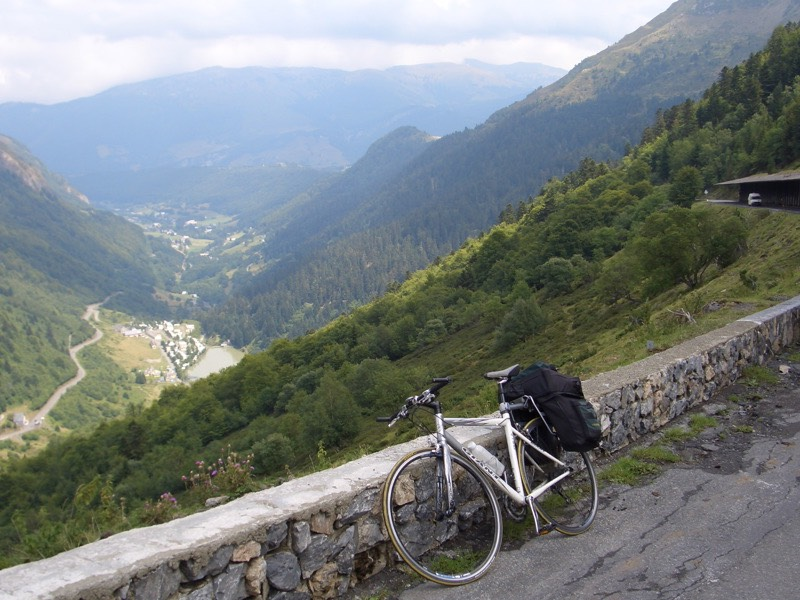
最上面那棟小房子，我想說應該不至於爬到那麼高吧？結果那只是半路會『經過』的地方，還是不最高峰。
山坡上白色的東西，是涓涓細流∼
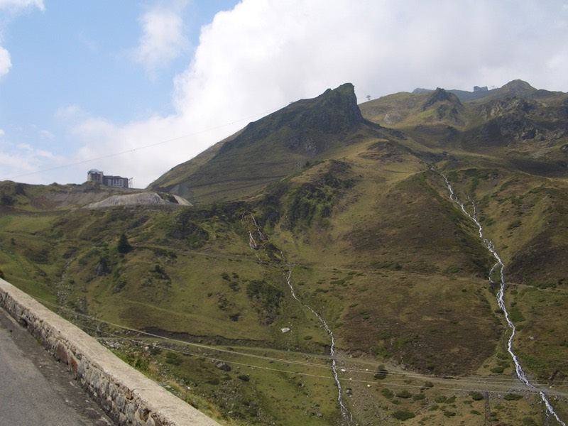
哪裡有困難，我們就往哪裡去！
謝謝路邊的小姐幫我拍照，還好請她多拍幾張，總算有一張是對到焦的。
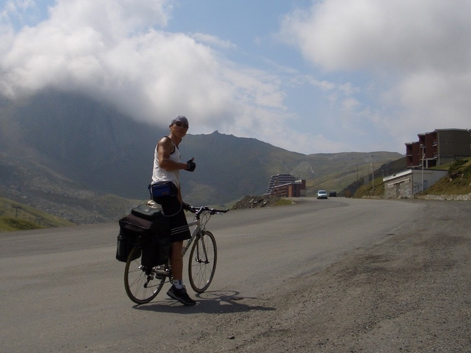
一千五百公尺，雲從眼前標過，近在咫尺的距離
S形的爬坡道，要翻過這個山頭，路上都沒有護欄這種東西，對駕駛人的技術很有信心。
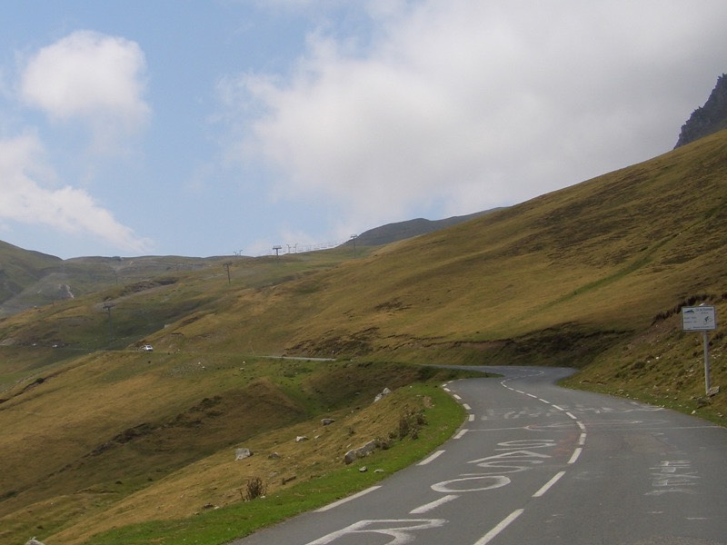
冬天的時候這裡就成了白雪紛飛的滑雪場，不可少的就是纜車，夏天的時候就沒什麼用處了∼
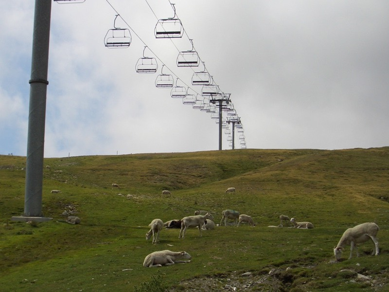
爬到這裡大約1900公尺，背景那個小鎮是為了滑雪觀光客而特別蓋的，全都是滑雪用品店、觀光大旅館之類的東西。
（也就是剛剛比大拇指請人拍照的地方，往下看自己爬上來的地方，都會覺得自己是怎麼一路騎上來的？ >"<）
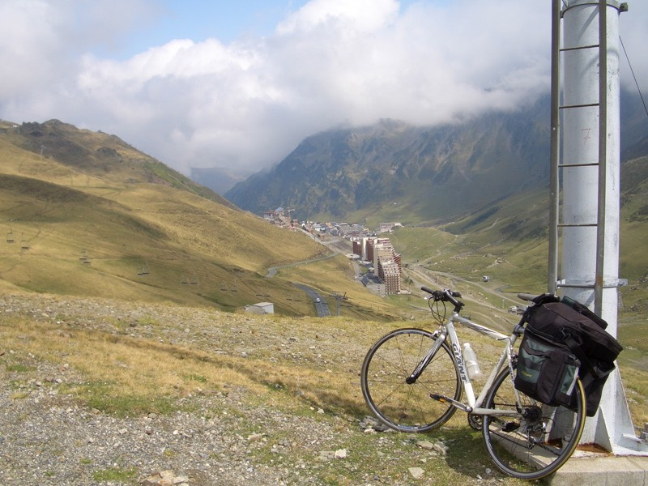
這個就比較像蒲公英了∼花是紫色的。
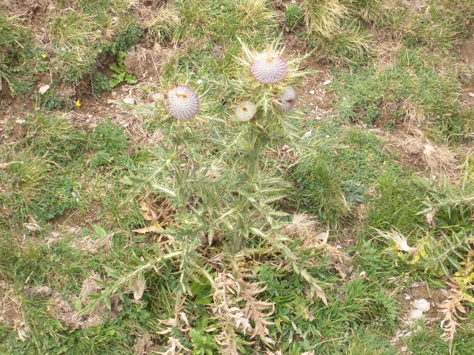
不停的爬呀爬∼終於、總算、皇天不負苦心人的，在下午三點二十分爬到了山頂。
還放了一個很好笑的腳踏車雕像，那猙獰的表情真是經典。
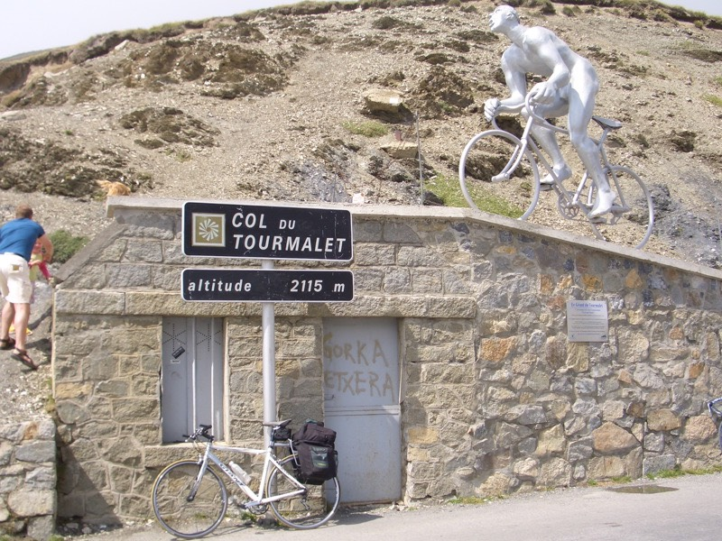
同時刻，有一位腳踏車騎士從山的另一邊也正好爬上來，兩個人面對面笑了一下，不曉得誰剛剛爬得那邊比較陡峭？
見過從英國倫敦來的湯尼（TONY），他說他認識我，前幾天有在什麼地方看過我，想不到又見面了。
是呀，這個世界真巧，同時選在今天爬山，還是從山的兩邊同時抵達，你佩服我，我也覺得你帥呆了！
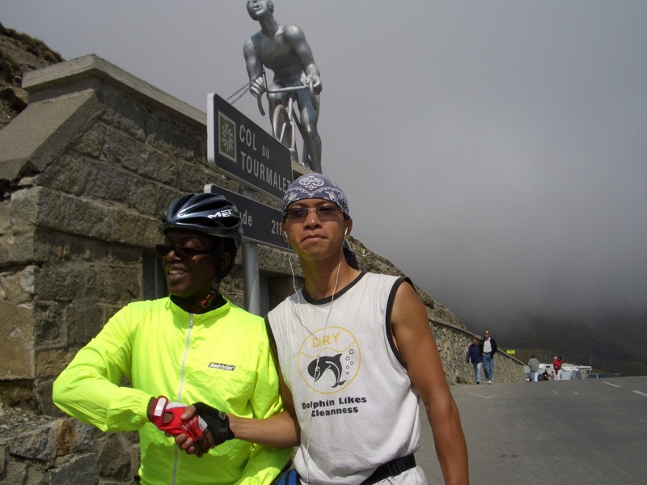
看到你穿的那件衣服好像很保暖，這時才感到有點冷 ~"~
國小有教，每爬升100公尺，氣溫降低0.6度，這邊算2100公尺好了，溫度就比平面降低了12.6度。
今天蠻涼爽的，假設現在山下是22度，那山上不到10度呀 XD 怎麼現在才開始會冷，會不會太遲鈍了一點？
準備下山吧，從這裡往另一邊看，只見雲從腳底下飄過，不是在頭頂上的才叫雲嗎？
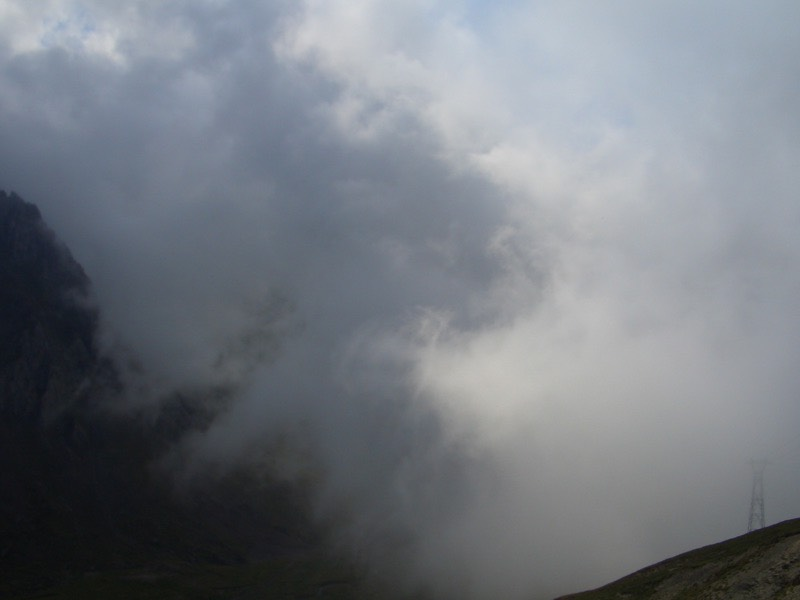
因為配音配的不好（又喘又興奮），所以消音了，用文字補充：
『這可不是起霧呀。這些全都是雲，看到了嗎？我騎的比雲還高呀！』
沿著山壁的D918，從高處往下看更覺得危險，開車要很小心才不會出意外。
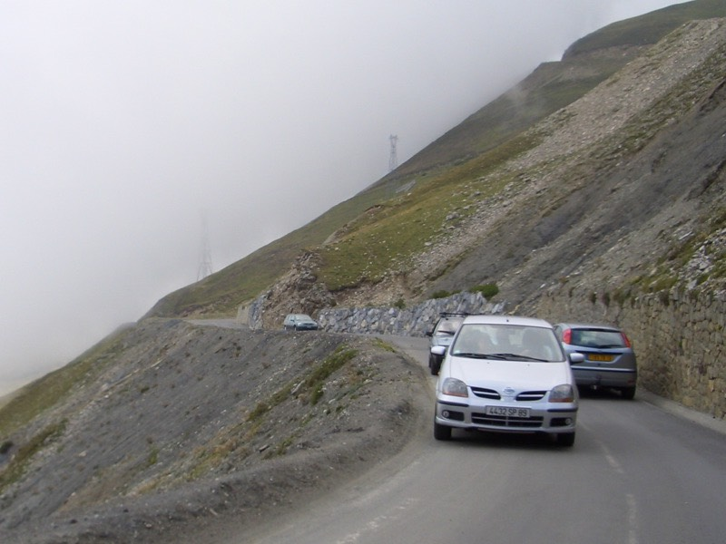
騎腳踏車更刺激，一路上煞車猛按，按到兩手都發酸也不敢放，坡度超陡，轉彎更是驚險。
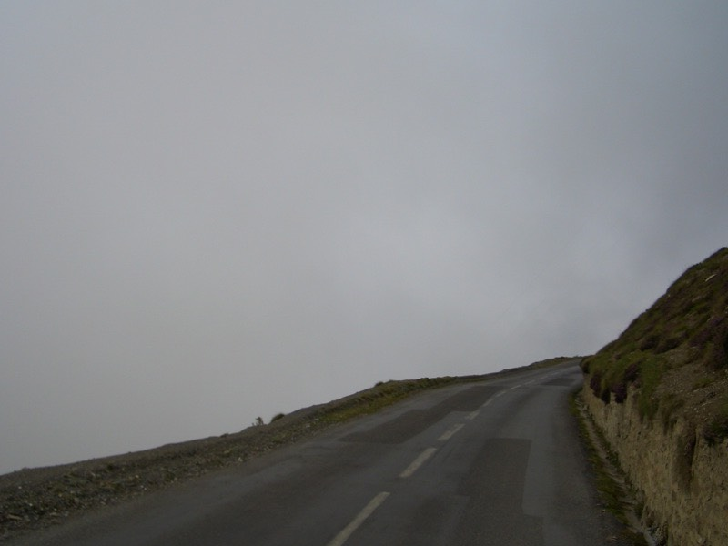
看看山腳下，真的好高呀....汽車都變成米粒了.....你自己沒事要爬這麼高的，自己想辦法下去吧 >"<
爬坡還算是容易的，慢慢踩就好了，下坡反而很想下車用牽的，真是無法言欲的刺激。
『從雲端掉落』大概能說明些許的感受。
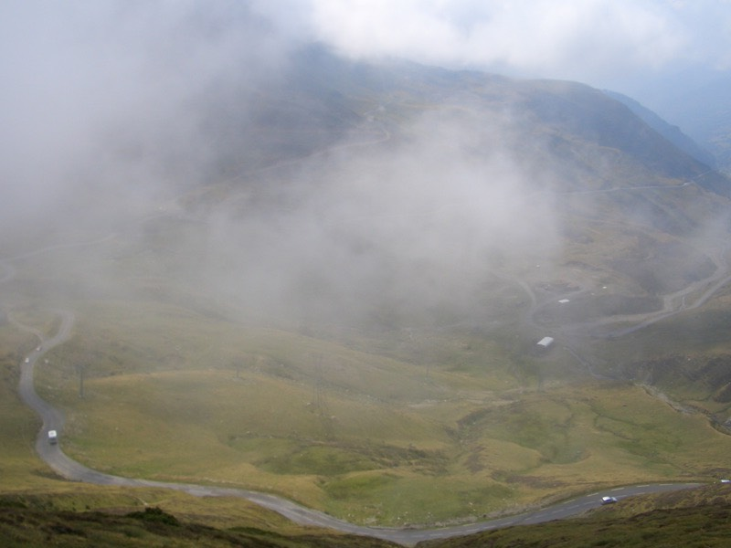
突然，開始傻笑起來，一笑就停不下來，是得意嗎？
笑著笑著，眼淚也掉了下來，還好沒有人看見，不然又哭又笑，病的可嚴重了。
羊群雖然都隨便養，但還是要分你家的跟我家的。
跟台灣人怕摩托車被人偷走所以會自己用噴漆把車毀掉...我是指類似101忠狗的記號。
這邊的羊身上也都有噴漆，脖子上還掛著諾大的鈴鐺，走起路來噹噹噹的∼超可愛。
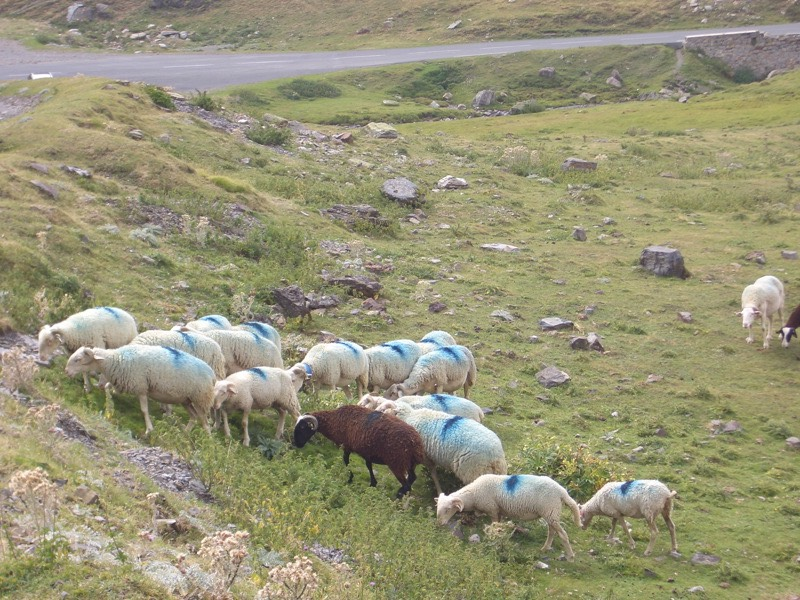
所幸沒有看到有羊的屍體躺在路上∼大家都練就了一身的好工夫。
看那兩隻飛簷走壁都能吃草的羊，實在佩服。
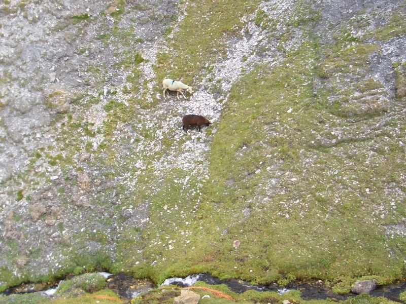
路上有發現山泉水，裝了一整瓶路上喝，泉水極度的冰涼，雖然可能有羊便便混雜其中的危機，
但喝起來味道還算甘甜，可能有人覺得不衛生，但我想這泉水應該比大台北地區的水要乾淨許多。
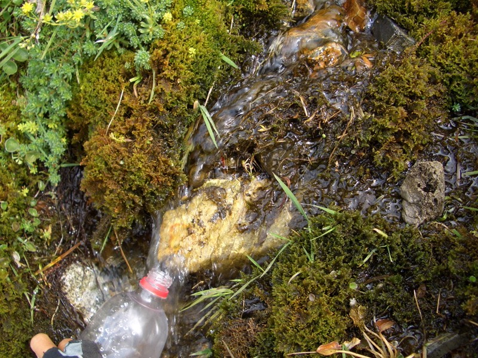
驚心動魄的滑下山，一口氣居然滑了有20幾公里，爬了那麼高，果然值得。
下山後換走D921往下個城市前進，沿路只要是小鎮，觀光味道都重的令人受不了。
招牌都是『SKI』、『HOTEL』、『LOCATION』（這個就看不太懂？）
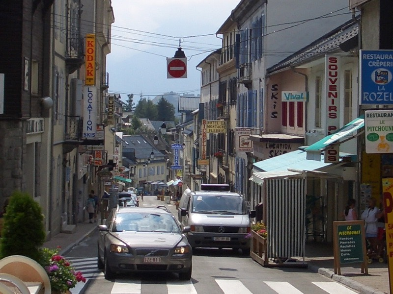
D921像是用巨大機械硬生生的把山挖出一條路似的，魄力十足，落石也不少。
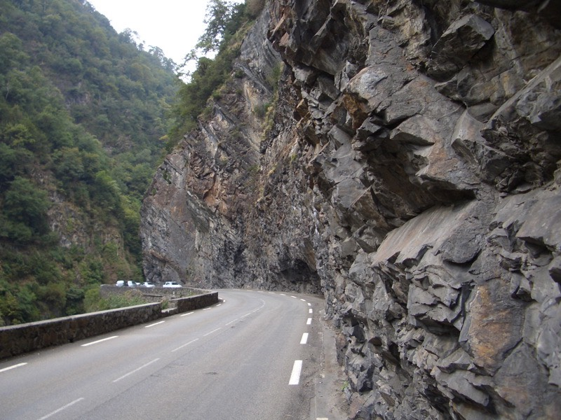
雖然不知道那管子是幹嘛的，但美麗的山裡有人工的東西，就覺得嫌惡的很礙眼。
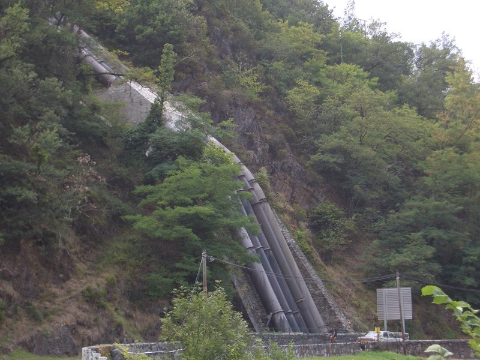
從山腳下看庇里牛斯山，還是覺得很壯觀，今天征服了其中的一個小山峰，算是達成爬山的心願了。
總的來說，台灣的蘇花公路要比法國的庇里牛斯山難爬，因為還要閃砂石車，這邊只要閃牛跟羊就可以了。
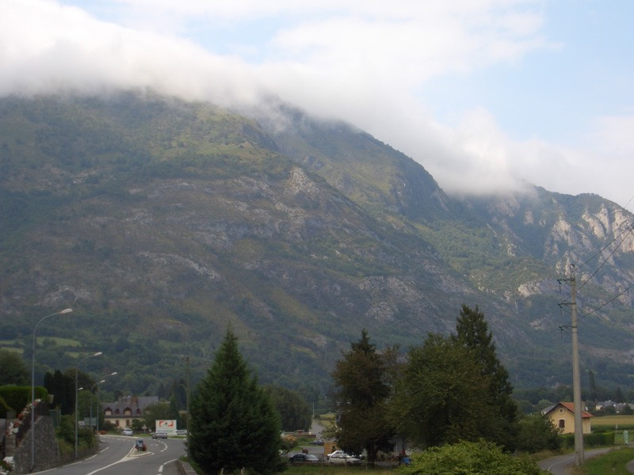
不知不覺通過了有溫泉的A小鎮，公路編號到N2021，千位數呢，有這麼多條N系列的路嗎？
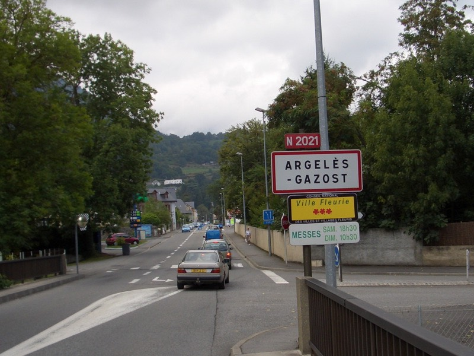
算了，天色還亮，往路德（LOURDES）繼續騎吧，聖水的小鎮有魅力多了。
N21不給走（咬牙切齒），算它有良心，還留了一條給腳踏車走的小路，只是要兜個圈子就是了。
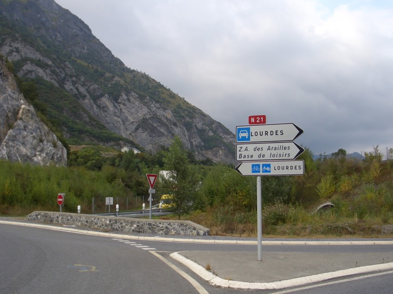
下午六點十分到達路德，發現超可愛的小公車在路上跑，一路上猛追呀∼∼∼幸好紅燈出現讓我追到它。
真是可愛到不行∼台灣的都換成這樣該多好。
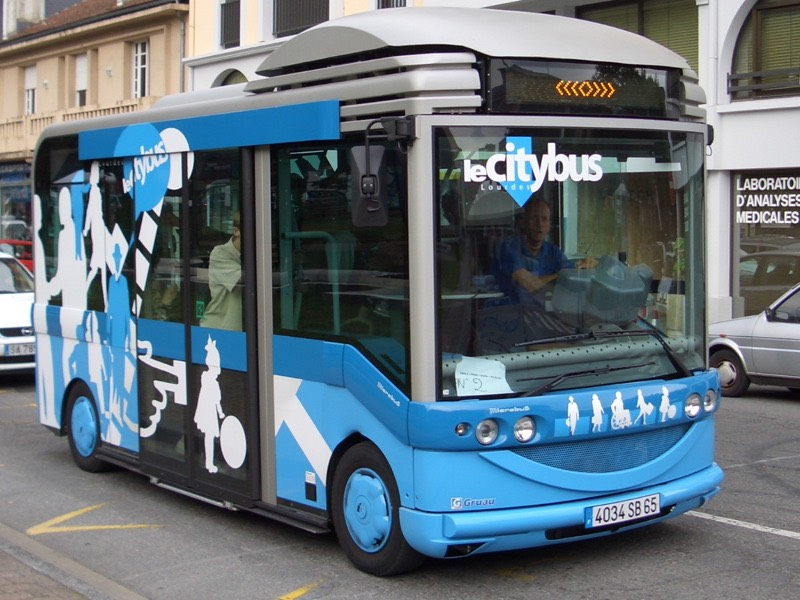
不知道是什麼東西的建築物，在追公車的時候順手拍的。
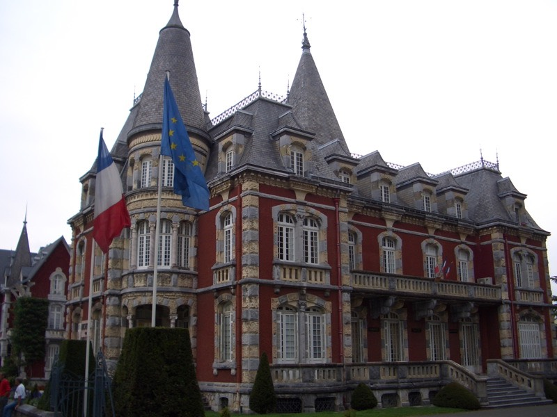
路德因為傳說有人看到聖女顯靈，而泉水又有治病的效果，所以成為觀光勝地。
但是對我來說，與其說是聖水小鎮，不如說是旅館大鎮，街上隨便拍一張照片，數數看，有幾間旅館呢？
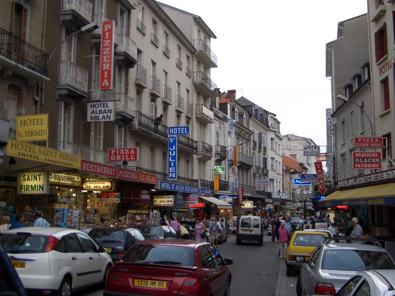
旅館多是最爽的了，沿路問多少錢，30？太貴了，29？還是太貴了，28，我很窮的，24......我是小氣鬼。
果然在巷子裡發現了20歐元的超便宜旅館！真是開心呀 :D 多問幾家果然沒錯，肯花時間找就會有便宜的出現。
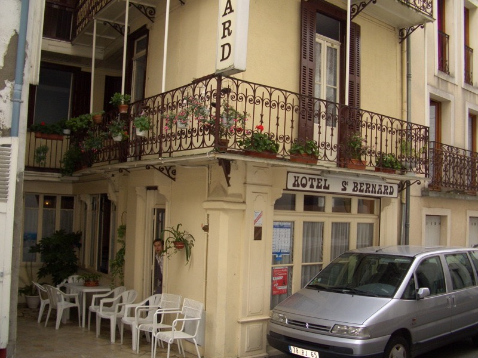
好多好多的觀光客往大教堂的方向走，路上的商店賣的清一色絕對有裝聖水的瓶瓶罐罐。
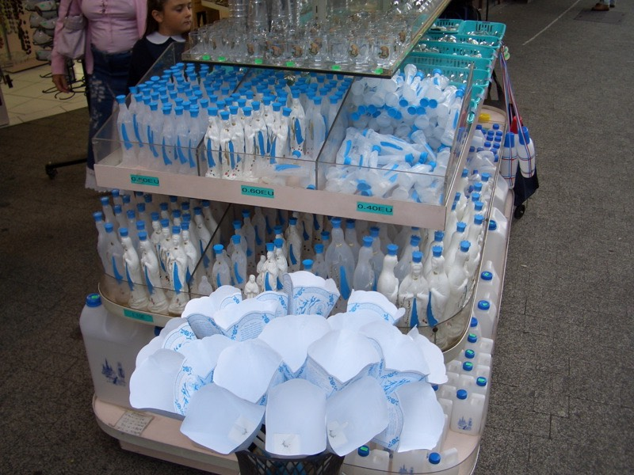
這是往教堂的路上
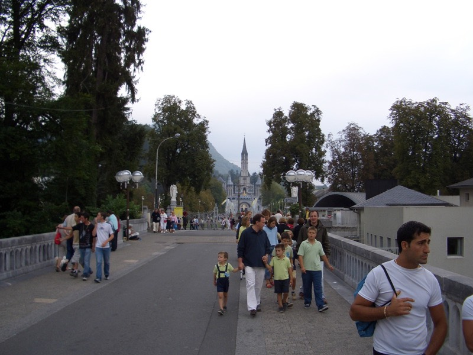
感覺病人不少，不知聖水是否真的能治好他們。
晃了兩圈，就我能發現的旅館數量，應該在60間左右，這僅是我能發現的唷，隱藏的不知有多少。
需求跟供給是成正比的，能想見這裡的觀光潮是多麼樣的驚人∼
路上有很多穿的白色修女服、頭戴白帽類似修女的人，但有些手上居然刁著香煙，就這麼抽了起來。
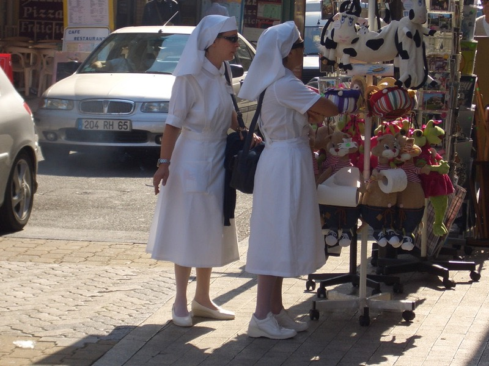
相較於女生的白色，男生修士穿的是咖啡色的長袍，宛如古代中走出來的人物一樣。
教堂，除了人可以進去之外，所有東西都禁止進入，包括腳踏車跟冰淇淋。
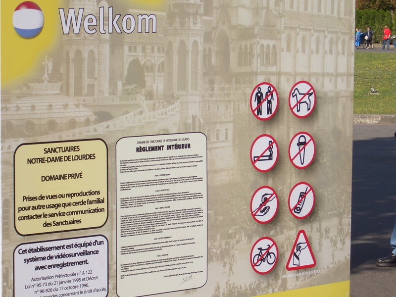
所以在外頭拍張照片就算到過了∼
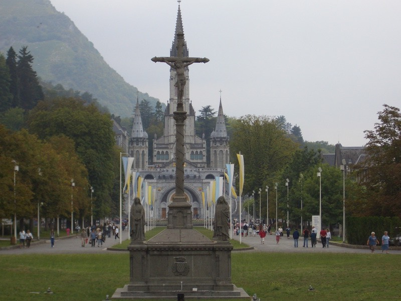
總算讓我找到網路可以用，記清楚路線，離旅館真是有點遠，半夜還要跑來這裡就有點累 ~..~"
八點了，回旅館吃飯吧！自己去外面吃，一定是買KEBAB解決，還不如吃旅館老闆娘自己煮的家常菜。
晚餐上桌囉，沒有菜單的餐廳是最棒的！反正也看不懂，端什麼上來我就吃什麼吧。
先喝加入麵條（？）的蔬菜湯，很好喝，給了我一鍋，剛好是三盤的份量。
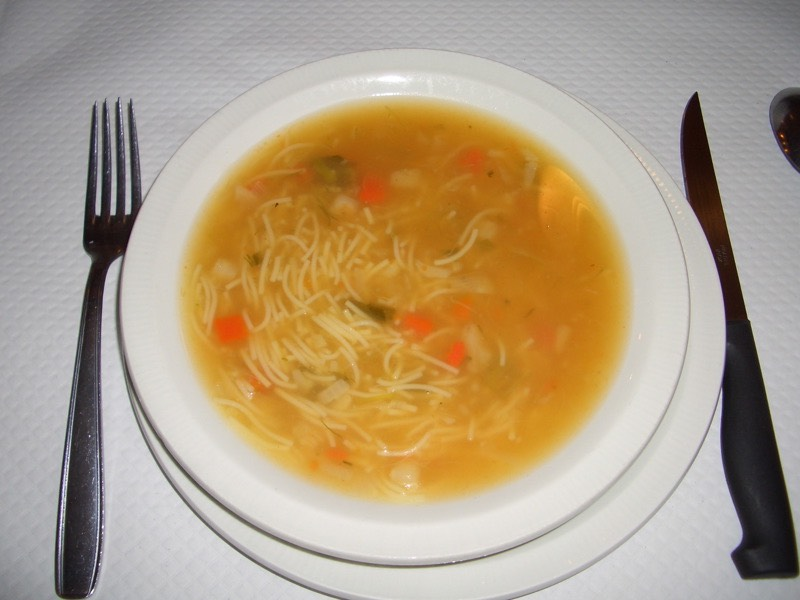
然後吃加入乳酪＆火腿的炸肉餅，這個也是超讚的！
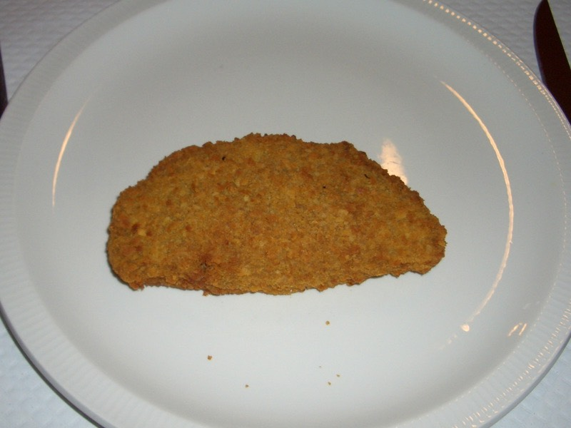
又送來一整鍋的燉菜，裡面有青豌豆、馬鈴薯、紅蘿蔔、洋蔥，吃起來居然是甜甜的味道。
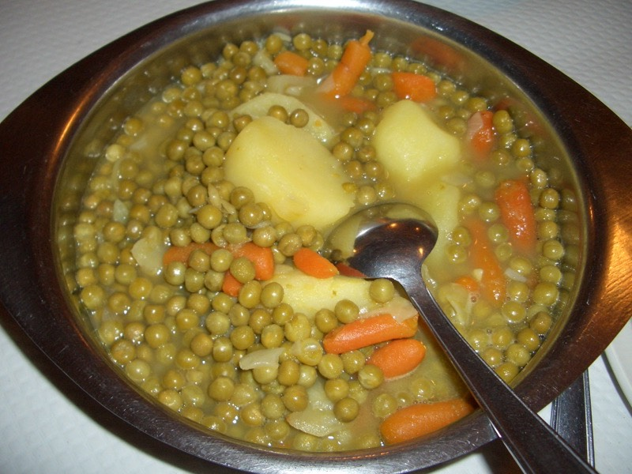
跟老闆娘說，這樣太少了，吃不飽，能不能再讓我加點一個蛋捲？
甜點是乳酪和一根香蕉。
（吃的東西真的很難拍，用了閃光燈就變得不好吃的感覺。）
飯後來杯香濃的咖啡，這樣居然也才10歐元？
除了20歐元的旅館令人雀躍之外，現在又多了一個可以期待的東西，10歐元的套餐，能吃到什麼好料？
今天爬了兩千公尺的山，雖然不是說很高，但已經心滿意足了∼可以臭屁的說自己爬過庇里牛斯山，而不是路過。
明天就要回到喧鬧的城市，一路再往西騎，也許能騎到靠海的地方吧？